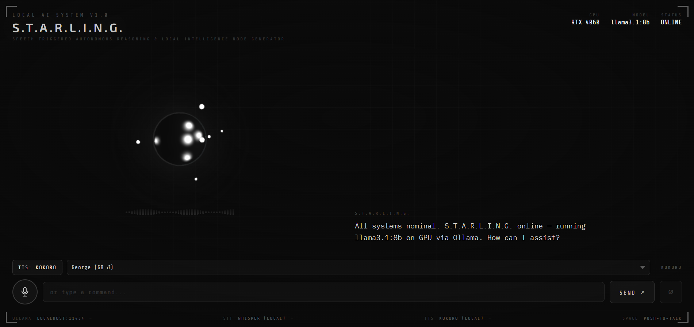

STARLING
Local LLM Voice Interface

What It Is
STARLING — Speech-Triggered Autonomous Reasoning & Local Intelligence Node Generator — is a fully local voice interface for a large language model. You speak, Whisper transcribes your words in real time, the LLM responds via Ollama with streaming output, and Kokoro synthesises the reply into natural-sounding speech, all while an animated HUD visualises the system's live state.
Nothing leaves the machine. No API keys, no remote servers, no subscriptions. The entire pipeline — speech recognition, language model inference, text-to-speech — runs on local hardware, with the only running cost being electricity.
Why I Built It
The motivation wasn't frustration with existing voice assistants — it was curiosity about how straightforward it would be to build one entirely from scratch, entirely locally. I wanted to prove out the concept: that with the right open-source components, a private, capable, conversational AI interface was achievable on consumer hardware without touching a single third-party API.
Local-first design is a philosophy I've come to genuinely enjoy. Beyond the obvious privacy and cost benefits — no compute bills beyond GPU wear, no data handed to corporations — there's a particular kind of engineering challenge in making constrained systems perform well. Getting meaningful latency out of a fully local speech-to-LLM-to-speech pipeline requires real problem-solving, and that's the part I find most satisfying.
STARLING also emerged as a necessary step in a larger vision: building a fully localised personal robot. The voice layer had to exist somewhere, and building it as a dedicated project gave me the space to develop and refine it properly. But somewhere along the way it became its own thing — the UX design took on a life of its own, and the project has grown well beyond its original role as a robot sub-component.
The Interface
The animated HUD was always central to the design — I wanted something that felt genuinely alive rather than a static UI waiting for input. The sphere and orbiting elements went through many iterations of trial and error before landing on the current design, but the guiding principle was consistent throughout: the interface should react. It responds to mouse movement, shifts state visibly as the system moves between listening, processing, and speaking, and gives the whole interaction a presence that a text box simply doesn't.
The sci-fi thread running through this is deliberate. HAL 9000, JARVIS, and countless novels have shaped what I think a human-AI voice interface should feel like — not a command prompt with a microphone attached, but something that seems to come alive when you speak to it. STARLING is my attempt to build that feeling with real, local, open-source technology.
How It Works
-
Input
Whisper STT — OpenAI's Whisper model runs entirely locally, transcribing spoken input in real time. The model is small enough to run on CPU while remaining impressively accurate across accents and conversational speech.
-
Inference
Ollama LLM — The transcribed text is sent to a locally-running LLM via Ollama. Streaming mode means the first tokens arrive almost immediately, which is critical for keeping the overall pipeline latency tolerable.
-
Output
Kokoro TTS — The streamed response is synthesised into speech by Kokoro. Chunked synthesis means audio begins playing before the full response is generated, further reducing the gap between question and answer.
-
HUD
Reactive Interface — A canvas-based animated interface visualises system state in real time — listening, processing, speaking — with a sphere and orb design that responds to mouse input and transitions between states, making the interaction feel like a live presence rather than a request-response loop.
Current State
The latency surprised me. With a few engineering optimisations — streaming LLM output, chunked TTS, careful pipeline sequencing — the end-to-end response time after audio delivery sits around 2–3 seconds, which is close enough to a natural conversational pause that it rarely feels like waiting.
The conversational quality is the area that still needs the most work. Without persistent memory, the system can go off the rails in extended conversations — confabulating details about itself, losing thread context, behaving inconsistently. Once a memory layer is integrated, I expect this to improve significantly. For now, it works best in shorter, focused exchanges.
What's Next
The next major feature is a dossier mode: activation words that trigger a structured presentation mode, where the LLM's output is delivered in a consistent, formatted manner while a relevant image is displayed alongside it. Think of it as a visual briefing system — you ask about something, and the interface switches into a clean, readable presentation rather than a conversational reply.
The use case I have in mind is a RAG-backed system built around information on friends — a fun, slightly absurd personal intelligence terminal. But the more general version is a Wikipedia-style dossier interface: ask about anything, get a structured visual summary. That version has a life of its own beyond the robot project, and is where I plan to take STARLING next.